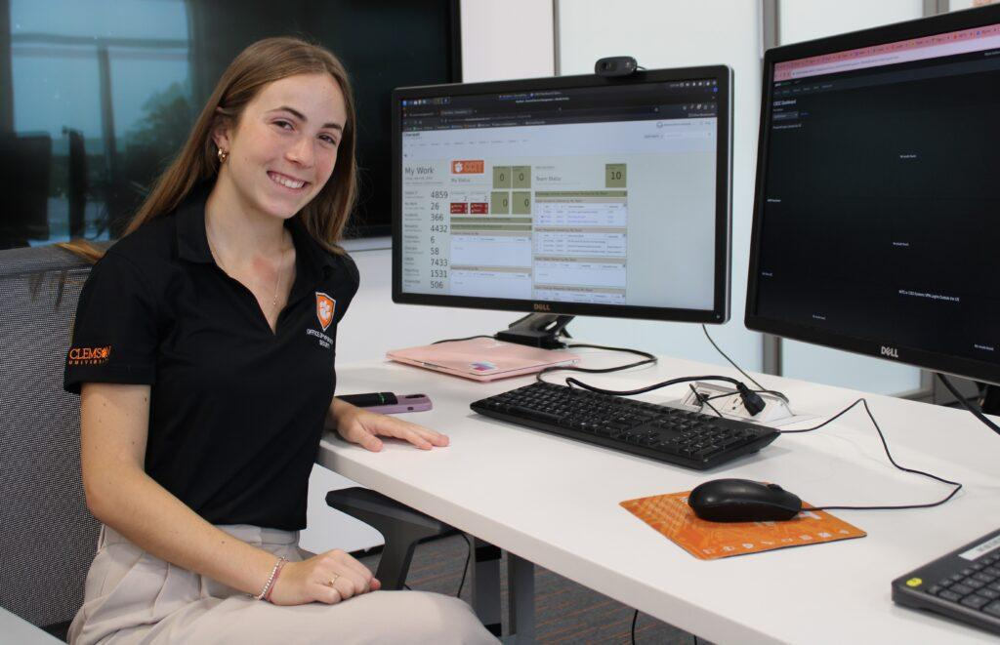

Launch Your Future as a Cybersecurity Analyst
Stop hackers, protect secrets, and be a digital hero in tech!
Pathway Snapshot
High School Courses | College Majors | Career Roles |
Computer Science | Cybersecurity | Cybersecurity Analyst |
AP Computer Science | Computer Science | Security Operations Analyst |
Math (Algebra, Statistics) | Information Technology | Threat Intelligence Analyst |
Networking / IT Fundamentals | Information Systems | Incident Response Analyst |
Digital Media / Tech Electives | Software Engineering | Ethical Hacker (Pen Tester) |
Women Who Lead the Way
Parisa Tabriz
VP of Chrome, Google (formerly “Security Princess”)
Photo Credit: Google/Wikimedia Commons
“Security is about protecting people—not just systems.”
Parisa leads security for Google Chrome, helping protect billions of users worldwide. She’s known for making cybersecurity more human-centered and accessible—proving you can be technical, creative, and people-focused all at once.
Day in the Life
Daily Tasks | Tools & Technologies |
Monitor systems for security threats | SIEM tools (Splunk, QRadar) |
Investigate suspicious activity | Wireshark |
Test systems for vulnerabilities | Kali Linux |
Respond to cyber incidents | Incident Response Platforms |
Collaborate with IT & developers | Firewalls, IDS/IPS |
Stay updated on new threats | Threat intelligence dashboards |
Mini-Activity: Try This!
Hack Like a Defender
- Visit a free online cybersecurity game (like a password-cracking or phishing simulation).
- Try creating a strong password using best practices (length + symbols + uniqueness).
- Bonus: See how long it would take a computer to crack it!
👉 This is exactly how cybersecurity analysts think—anticipating attacks before they happen.
Careers & Resources
Degree Program Finder:
- National Centers of Academic Excellence in Cybersecurity (NSA / DHS)
Scholarships:
- CyberCorps®: Scholarship for Service
- Local STEM & Women-in-Tech scholarships
Camps & Bootcamps:
- Girls Who Code Cybersecurity Programs
- CyberPatriot Camps
Explore More:
- O*NET: Cybersecurity Analyst
- Roadtrip Nation: Cybersecurity Careers
You Belong Here
If you love solving mysteries, protecting others, or figuring out how things work (and break)—cybersecurity could be your future. You don’t need to be a “hacker stereotype” to succeed. This field needs curious thinkers, creative problem-solvers, and diverse voices.
Your curiosity is your superpower—and the internet needs you.
